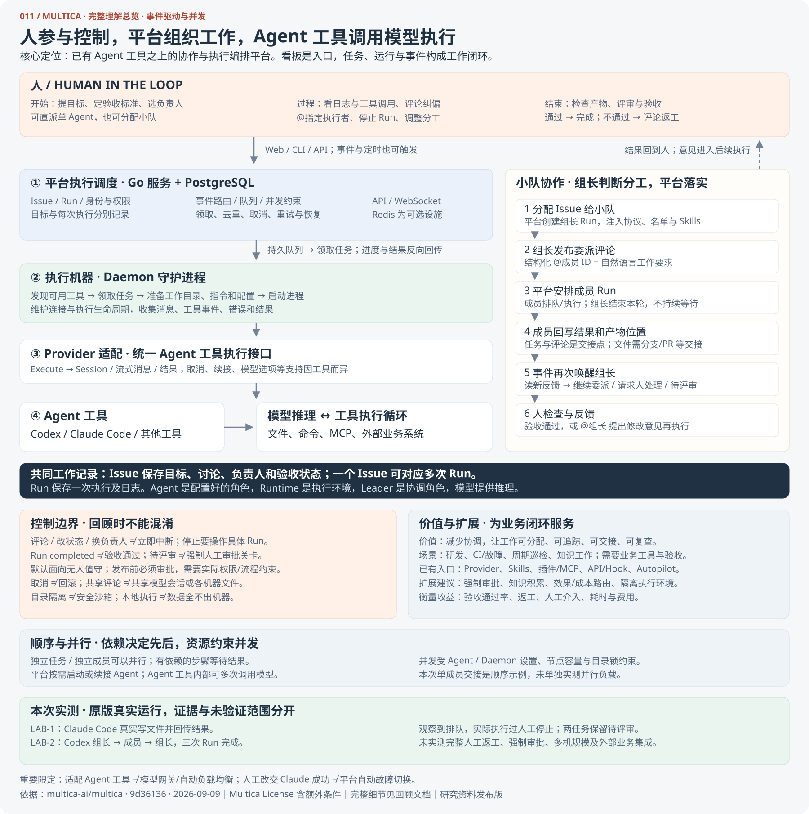

工具适配
统一不同 Agent 的启动、消息、取消和结果。配置模型选项，由相应工具调用模型。
Multica 调度 Codex、Claude Code 等 Agent 工具，
用任务、执行队列和反馈记录，连接人的目标与 AI 的工作。

点击图可放大、缩小或下载。完整细节保存在回顾文档；本图概括主线与关键边界。
统一不同 Agent 的启动、消息、取消和结果。配置模型选项，由相应工具调用模型。
Issue 保存工作目标；Run 保存一次执行。平台负责队列、路由、状态与恢复，Daemon 负责实际运行。
组长决定如何分工；平台将结构化评论变成成员任务，收到反馈后再次唤醒组长。
平台按事件启动或续接 Agent 执行，工具内部可多次调用模型。一次 Run 不等于一次模型请求。
可以同时执行，受 Agent、Daemon 并发配置与节点容量约束。
前端分析与后端分析可以分头工作，组长收到结果再汇总；依赖前序产物的工作需要等待。
单成员交接演示了顺序依赖与事件唤醒，不代表只能串行；尚未单独做并行负载实验。
点击步骤查看信息如何流动。下方是机制讲解，不会启动模型或提交真实任务。
开始时派工，中途看日志与评论纠偏，结束时审查真实产物。评论可触发后续执行；需要立即制止时，应停止对应的 Run。
查看消息、工具调用和错误；评论、附件、@Agent 或 @小队，让新要求进入执行流程。纯文本 @名字不等于有效提及。
在执行日志停止 Run，再调整要求或负责人。单独改任务状态、改负责人，不会中断已经启动的执行；停止也不等于回滚。
检查结果，通过后完成；不通过则评论并要求补做。Run 正常结束、任务待评审、人工验收通过，是不同概念。
默认运行面向无人值守，底层工具审批会自动处理。如果要求“发布前必须经人批准”，需要审批结果与实际执行权限绑定；这是扩展方向，本次未实现。
本次已实测 Run 级停止并确认评审/评论入口；尚未实测用户评论后返工的完整循环。
独立源码与数据库运行在本机。以下状态来自本次验证记录；页面中的示例工作区均为本地演示数据。
本机入口仅对运行服务的电脑有效；静态研究页不托管 Multica 服务。
集中派工、查看阻塞、追踪执行与结果；定时运行重复任务；把团队工作方法沉淀为 Skills。
围绕工单、CI 故障、巡检等业务，接入工具、验收标准与反馈。插件、MCP 和 Skills 已提供扩展入口。
看任务完成率、人工介入次数、返工率、耗时和费用。组长协调也会消耗模型调用和时间。
按运行环境路由 ≠ 自动模型负载均衡；Run 结束 ≠ 业务验收通过；工作目录隔离 ≠ 安全沙箱。
源码采用 Multica License，包含对第三方托管、商业嵌入和品牌的额外条件。